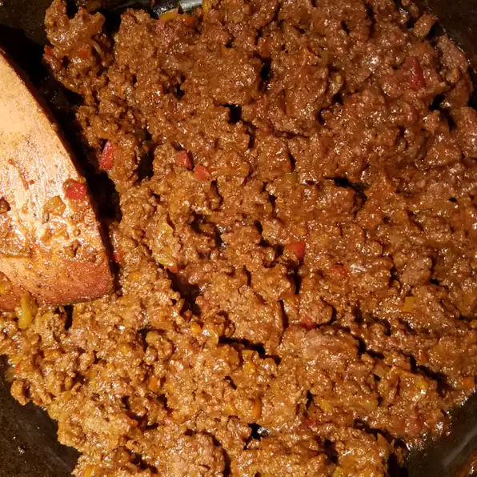

Back to Selection
Sloppy Joe

Description
Ingredients
- 11⁄2 pounds extra lean ground beef
- 11⁄2 onion, diced
- 2 cloves garlic, minced
- 1 green bell pepper, diced
- 1 cup water
- 3⁄4 cup ketchup
- 2 tablespoons brown sugar
- 1 teaspoon Dijon mustard
- 1 dash Worcestershire sauce
- 11⁄2 teaspoon salt, or to taste
- 1⁄2 teaspoon black pepper
- 1 cup water (again)
- 1 pinch cayenne pepper, or to taste
Steps
- Combine the ground beef and onion in a cold skillet, place the skillet onto a stove burner, and turn the heat to medium;
cook and stir until the beef is crumbly and browned. Stir the garlic and bell pepper into the beef mixture; continue cooking and stirring
until the vegetables are tender, 2 to 3 more minutes. Add 1 cup of water. Mix in ketchup, brown sugar, Dijon mustard, Worcestershire, salt,
and pepper. Pour in 1 more cup of water. Bring to a simmer.
Reduce heat to low and cook until the mixture becomes very thick, 30 to 45 minutes.
Adjust salt and pepper as needed. Season with cayenne.